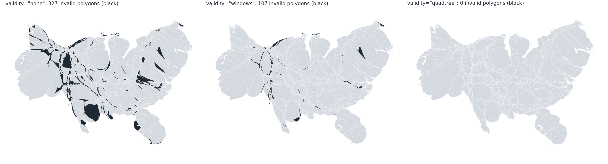

validity="repair-quadtree" (stacked on the validated-windows PR) builds a graded quadtree mesh from the density at every field recompute, inserts vertices where the boundaries cross the mesh, and moves the vertices with the piecewise-affine map of the advected mesh nodes. On raw coarse counties (43 k vertices) the output has 0 invalid polygons against 327 without the option and 107 with validated windows; on the 1 km counties 0 against 57 (the accuracy at a fixed budget is lower than with validated windows and the vertex count 1.6 to 2 times higher).
coarse_comparison.py <output dir> runs the three cases on the branch and draws the figure.
| input | option | time | invalid | vertices | mean / median / p95 error | above 10 % |
|---|---|---|---|---|---|---|
| counties | none | 40 s | 57 | 768,580 | 1.37 / 0.25 / 2.44 % | 60 |
| counties | windows | 43 s | 0 | 769,475 | 1.08 / 0.20 / 2.63 % | 45 |
| counties | quadtree | 38 to 50 s (4 runs) | 0 | 1.27 to 1.57 M | 2.6 to 5.3 / 0.18 to 0.87 / 10.6 to 25.6 % | 161 to 294 |
| districts | none | 4.0 s | 2 | 343,042 | 0.48 / 0.26 / 1.90 % | 0 |
| districts | quadtree | 6.9 to 7.3 s | 0 | 398,167 | 1.58 / 1.23 / 4.33 % | 0 |
| raw coarse | none | 23 s | 327 | 43,084 | 12.3 / 0.93 / 49.7 % | 508 |
| raw coarse | windows | 22 s | 107 | 56,225 | 3.94 / 0.06 / 17.6 % | 226 |
| raw coarse | quadtree | 28 to 34 s | 0 | 0.84 M | 2.7 to 5.3 / 0.28 to 0.42 / 10.1 to 23.8 % | 159 to 308 |
Counties and districts were reproduced independently (counties 38.9 s, 0 invalid, 1,267,995 vertices, mean 5.04 %, 294 above 10 %; districts 7.0 s, 0 invalid, 398,167 vertices, mean 1.58 %). Perturbed counties (dt 0.18 and 0.24, recompute_every 5 and 20): 0 invalid, no inversion left after the fix.
As for the validated windows, with the quadtree lineage (insertions and removals): lift_geometries(geometries, state=None), VertexLineage.state_at, linear animate_morph_history up to the best iterate (through="best", "last" with linear raises), and align_vertices for separate morphs. Two quadtree morphs with 387,619 and 414,428 vertices align to 458,981 each (Hausdorff distance 5e-10, 432 of 432 valid). A snapshot lifted to the final vertex set drops the vertices removed later, so its area differs from the recorded one by the pruning tolerance. 15 new tests; full suite 1654 passed, docs build passes.

Raw coarse counties (43,084 vertices) with validity="check" (327 invalid polygons in black), "windows" (107) and "quadtree" (0). The validated windows cannot catch the crossings on this input because the segments are much longer than the cells; the mesh of the quadtree method splits them before they cross.